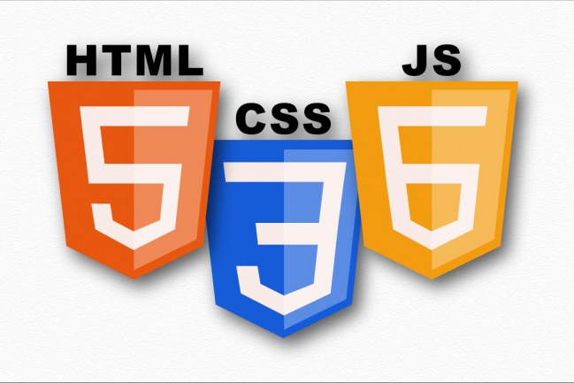

о серж кенне
Создание высококачественных веб-сайтов и исключительный пользовательский интерфейс
Я - разработчик Верстальщик, У меня есть 1 год опыт работы с клиентами, предоставляющий гибкие адаптивные сайты веб-сайты
Клиенты часто подходят ко мне, когда им нужен разработчик, который может предоставить:
- адаптивные сайты
- Front-end Development
- HTML
- CSS
- javaScript
- Jquery
- Perfomance
- Animation
Работа, которую я предоставляю, имеет высокое качество, полностью отзывчива и протестирована в широком диапазоне устройств. Я очень забочусь о том, чтобы каждый проект был хорошо документирован и легко ремонтировался, чтобы вы могли улучшить веб-сайт по мере роста вашей компании.
Часто внешняя разработка веб-сайта не учитывается, но, будучи частью вашего проекта, который сочетает в себе дизайн, внутреннюю разработку и уровень, с которым взаимодействуют ваши пользователи, по моему опыту, это самое важное, чтобы получить право.
Часто внешняя разработка веб-сайта не учитывается, но, будучи частью вашего проекта, который сочетает в себе дизайн, внутреннюю разработку и уровень, с которым взаимодействуют ваши пользователи, по моему опыту, это самое важное, чтобы получить право.
Навыки
Уверенные знания HTML5, CSS3. Понимание принципов БЭМ Верстка адаптивных сайта. Отличные знания HTML, CSS. Sass (возможно less). Знание методологии БЕМ. Опыт работы с CSS фреймворками. Семантическая, кроссбраузерная и адаптивная вёрстка..
Front-end Developer


Я создаю отзывчивые веб-сайты, которые позволяют пользователю испытать ваш сайт наилучшим и наиболее подходящим способом, подходящим для устройства, которое они используют. Работая с прогрессивным улучшением, ваш сайт поставляется с гибким макетом, который может наилучшим образом использовать пространство, доступное на самых маленьких и самых больших устройствах. Кросс-браузерная совместимость обеспечивается благодаря обнаружению функций, поэтому старые браузеры, которые все еще используются сегодня, обеспечивают солидный опыт, в то время как современные браузеры могут перейти на следующий шаг и увеличить время пользователя на вашем сайте.
Написание семантической разметки, которая документирована и легко читается, означает, что она может поддерживаться и масштабироваться в будущем и позволяет сотрудникам быстро работать с ней.
Вместо того, чтобы создавать сайты на каждой странице, я вместо этого рассматриваю каждый элемент ваших экранных проектов как отдельные компоненты, которые могут существовать в другом месте на веб-сайте; вне контекста ваших дизайнерских композиций. С помощью этих компонентов я создаю руководство по стилю, которое действует как документ для многоразовой и поддерживаемой базы кода. Все участники проекта могут опираться на руководство по стилю, чтобы понять язык проекта и обеспечить более последовательный пользовательский интерфейс.